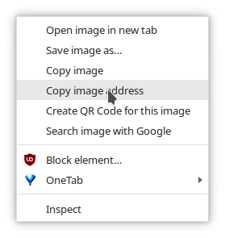

Lessons from Homework 5
1 Compile your file first
Also, check your compiled file before you submit to make sure it looks the way you want it.
If you want to be really sure it works, copy your qmd file to a different folder and compile that… for now, that’s the best way to check that it will work on my machine.
2 Images
Image links must be to the image url, not to the imgur page url

Code for this image:
{width=50%}You can get this url by right-clicking on the image on the Imgur page and then selecting “Copy image address”:

Other things that don’t work:
- Including (local) file paths directly (user names changed to protect the innocent):
\C:\Users\person\Documents\Flow chart HW5.pngC:\Users\person\Downloads\Stat 151\Excalidraw.png
- Including (local) file paths in correct image syntax
Explanation: this works on your machine, but won’t work on mine because I don’t have your file on my machine. You could zip the PNG file and the qmd file up together and submit that, I guess, but it’s easier to follow the directions about imgur (in my opinion).
3 YAML metadata
YAML metadata is the stuff between --- at the top of your document.
- You should have only one set of metadata in your document.
In this example, you should delete the first set of YAML metadata and only include the second set that has the proper information for the assignment.
---
title: "person HW 5"
format: html
editor: visual
---
---
title: "Homework 5: Vectors and Control Structures"
author: "person"
date: "Due: March 3, 2023"
output:
html_document:
self_contained: yes
---
- YAML metadata indentation matters
This works:
output:
html_document:
self_contained: yesThis doesn’t:
output: html_document
self_contained: yesThis works:
---
title: "Homework 5: Vectors and Control Structures"
date: "Due: March 3, 2023"
output:
html_document:
self_contained: yes
---This doesn’t:
---
title: "Homework 5: Vectors and Control Structures"
date: "Due: March 3, 2023"
output:
html_document:
self_contained: yes
---4 Quarto default template
It’s totally fine to delete the default quarto information that looks like this from the bottom/top of your file.
It’s also totally fine to delete the YAML metadata that comes with that quarto default template. I usually say “Create blank document” or switch to source mode and Ctrl-A (select all) before Ctrl-V (paste) to remove everything that RStudio gives you by default.
## Quarto
Quarto enables you to weave together content and executable code into a finished document. To learn more about Quarto see <https://quarto.org>.
## Running Code
When you click the **Render** button a document will be generated that includes both content and the output of embedded code. You can embed code like this:
```{r}
1 + 1
```
You can add options to executable code like this
```{r}
#| echo: false
2 * 2
```
The `echo: false` option disables the printing of code (only output is displayed).5 Print only necessary output
I would prefer if you didn’t print out the values of a vector in the code chunks when you submit your file. Comment those out - it’s useful to have them for debugging, but you don’t need them for presentation purposes.
What to do:
x <- as.numeric(x)
# x # Commented out, so you can uncomment to debug if necessaryWhat not to do:
x <- as.numeric(x)
x [1] 325698 766364 362012 166247 897999 294171 916664 884662 278403 940574
[11] 106891 381401 849972 897001 226519 828195 91265 753154 588095 457528
[21] 277275 809052 113874 671162 686489 896904 747724 7053 950898 707745
[31] 168003 523324 896071 810445 641980 457608 941793 14326 706029 537414
[41] 55988 910090 506347 526471 962873 317735 762427 638727 425519 388537
[51] 280629 940575 755803 934680 911933 857272 707581 358178 789662 394281
[61] 7500 178213 362466 967969 252530 128349 953298 500442 760581 367530
[71] 871698 127322 190632 637714 365932 776579 969538 916833 254271 692061
[81] 253268 136396 295048 643919 979193 716806 945620 576969 602211 402003
[91] 536309 626646 882011 89558 114729 187246 866224 493441 529045 677284